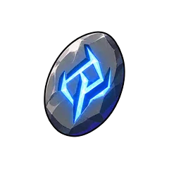
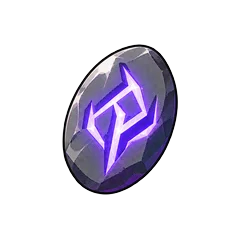
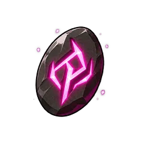
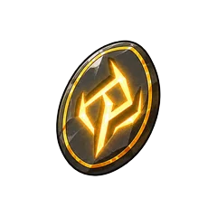
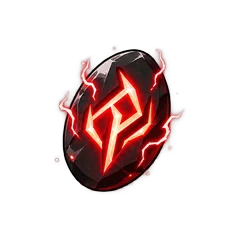

Runes
Runes put traits on your swords. You craft them from dust, spend them at the Trait Roulette in Raid Lobby, and get a random trait in a sword slot.
There are five rune tiers, from Veteran to Godkiller. A higher tier gives better odds of a strong trait.
Roll Chances
The rune picks the tier of the trait first. Then every trait of that tier has the same chance. Each trait's page shows its exact chance for each rune.
| Rune | Veteran trait | Champion trait | Overlord trait | Sovereign trait | Godkiller trait |
|---|---|---|---|---|---|
| Veteran | 70% | 25% | 5% | 0% | 0% |
| Champion | 30% | 50% | 18% | 2% | 0% |
| Overlord | 10% | 30% | 45% | 13% | 2% |
| Sovereign | 0% | 10% | 35% | 45% | 10% |
| Godkiller | 0% | 0% | 20% | 45% | 35% |
- Luck has no effect on trait rolls.
- Rune rolls have no pity. Every roll has the same chance.
- The same trait can't land on one sword twice. A trait that's already there is skipped, and its chance goes to the others in its tier.
Rolling and Rerolling
- Roll: one rune goes into one empty open slot of your choice.
- Reroll: every open slot that isn't locked gets a new trait, and each slot costs one rune. All runes in a reroll are the same tier.
- Lock: free. A locked slot keeps its trait and costs no rune. Only a slot with a trait can be locked.
- A slot can roll the trait it already had.
The Salvager trait gives each rune spent on a roll a 40% chance to stay with you.
Sword Slots
Every sword has up to 3 trait slots. Slot 1 is open from the start.
- Slot 2: 8 Champion runes and 4 Overlord runes.
- Slot 3: 30 Overlord runes. Open slot 2 first.
- A slot opens once, and only on that sword. A new slot is empty until you roll a rune in it.
Crafting Runes
Craft runes at the Trait Roulette. Each rune is made from dust of its own tier.
| Rune | Crafting cost |
|---|---|
 Veteran | 20 Veteran Dust |
 Champion | 15 Champion Dust |
 Overlord | 10 Overlord Dust |
 Sovereign | 13 Sovereign Dust |
 Godkiller | 9 Godkiller Dust |
Dust
Dust comes only from the Horde raid, for every 5th wave you clear. There are seven dust tiers, but Recruit and Fighter dust can't make runes. You can only trade dust up.
| From | To | Trade |
|---|---|---|
| Recruit | Fighter | 3 to 1 |
| Fighter | Veteran | 3 to 1 |
| Veteran | Champion | 3 to 1 |
| Champion | Overlord | 3 to 1 |
| Overlord | Sovereign | 4 to 1 |
| Sovereign | Godkiller | 5 to 1 |
- Overlord dust drops only on Hard.
- Sovereign and Godkiller dust never drop. You only get them by trading up.
Fragments
You can also buy ready-made Veteran runes. The fragment shop at the Trait Roulette sells one for 8 fragments, as many as you can afford.
- Sword bosses in Worlds 2, 4 and 6 drop 1 or 2 fragments, with a 40% chance per kill.
- Login rewards and some Battle Pass levels give fragments too.
- Drop and luck bonuses don't change fragment drops.
- Fragments can't be bought with any currency.